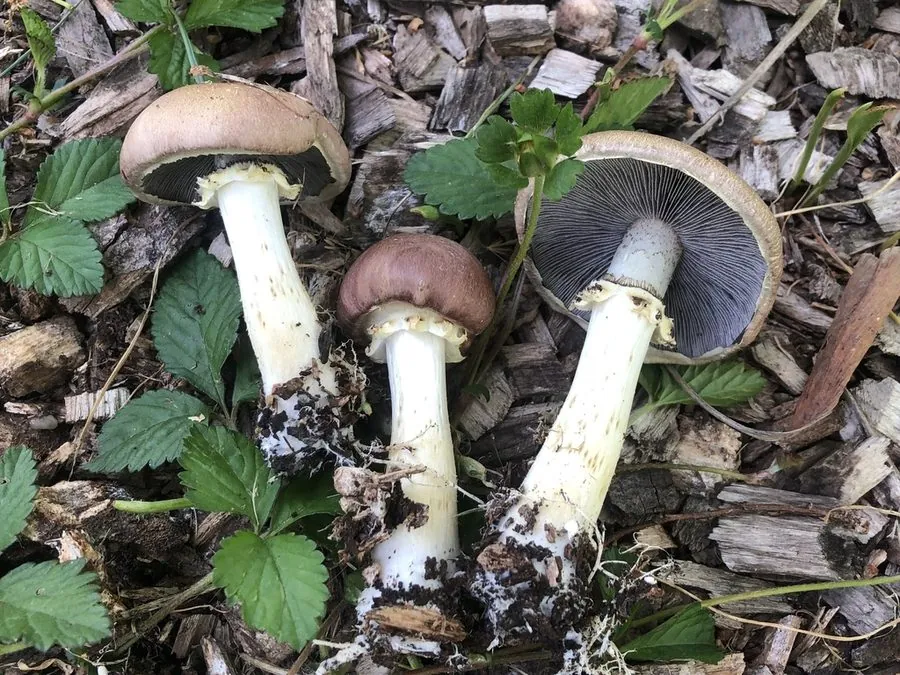

真菌 · 真菌界
皱环球盖菇 Stropharia rugosoannulata

皱环球盖菇的菌盖呈酒红色至紫褐色，菌柄粗壮并带齿轮状菌环，常栽培于稻草和木屑上，肉质肥厚、味道鲜美。
- 分类
- 门担子菌门纲伞菌纲目伞菌目科球盖菇科属球盖菇属
- 栖息环境
- 草地、林缘、木屑堆与稻草培养料上，喜湿润通风
- 地理分布
- 原产欧洲与北美，现中国多地引种栽培
- 保护级别
- 暂无评估（IUCN 未评估，中国未列入重点保护名录）
物种志
皱环球盖菇是担子菌门球盖菇科的真菌，子实体单生或丛生。菌盖初期半球形，后平展，直径 5–15 cm，表面酒红色、紫褐色至暗红褐色，光滑，边缘常附有白色的菌幕残片；菌肉白色，厚实。菌褶直生，幼时灰白色，后变为紫灰色至黑紫色。菌柄白色，粗壮，长 5–12 cm，直径 1–3 cm，中部有厚实的菌环，菌环表面有放射状的皱褶，像齿轮一样，因此得名“皱环”。孢子印紫褐色至黑紫色。
皱环球盖菇原产欧洲和北美，生于草地、林缘和木屑堆上，靠分解稻草、木屑等有机质生长。它栽培容易，可用稻草、谷壳和木屑作培养料，是国际上广泛栽培的食用菌之一。皱环球盖菇肉质肥厚、口感脆嫩，有淡淡的酒香，可炒食、炖汤和烤制；富含蛋白质、多糖和膳食纤维。栽培时需保持湿润和通风，出菇期避免阳光直射，采收应在菌幕刚破裂时进行。
形态与习性
- 菌盖直径 5–15 cm，酒红至紫褐色
- 菌褶灰白，后变紫灰至黑紫色
- 菌柄白色粗壮，长 5–12 cm
- 菌环厚实，表面有齿轮状放射皱褶
- 孢子印紫褐色至黑紫色
- 栽培稻草、谷壳与木屑作培养料
- 食用性可食，肉质肥厚，有淡淡酒香
趣味知识
- 皱环球盖菇的菌环上有放射状皱褶，像一圈小齿轮。
- 菌盖呈酒红色，所以英文名被叫作“酒色蘑菇”。
- 它可以用稻草和木屑栽培，是联合国推荐栽培的食用菌之一。
- 采收要在菌幕刚破裂时，开伞后口感会变差。